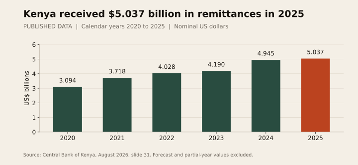
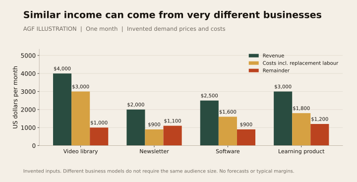
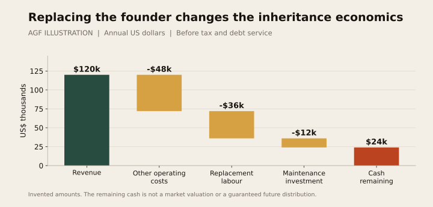
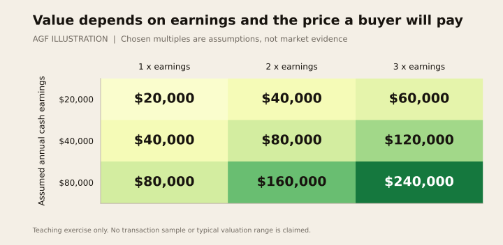
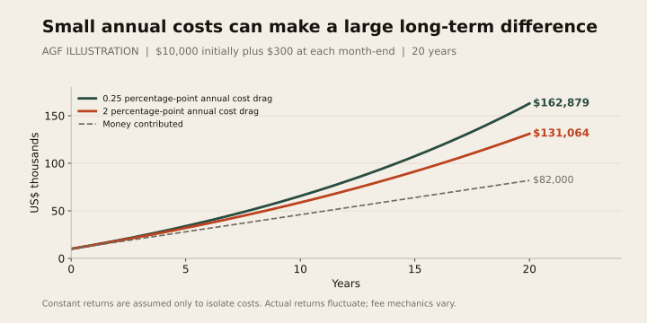
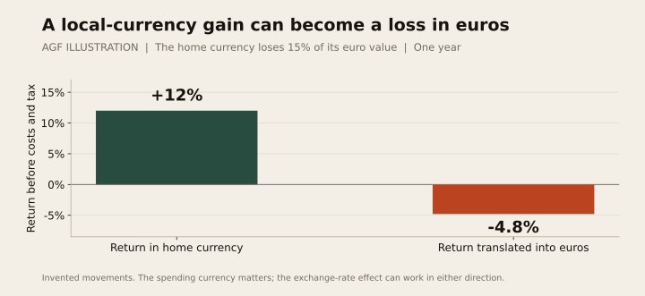
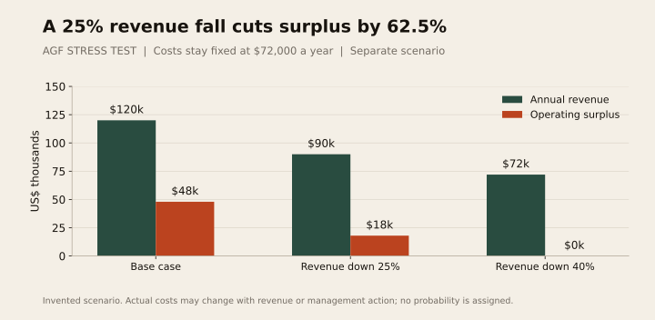
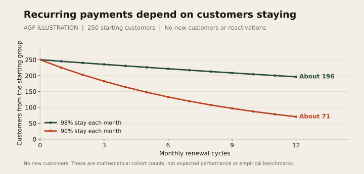
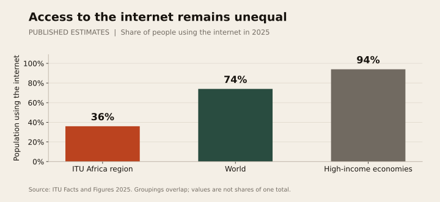

Building Family Wealth
for Africans Abroad
What will your children actually inherit? Explore social media businesses, websites, software, creative rights, shares, pensions and property—and what turns each into lasting value for your family.
Explore the chartsDownload chart data (CSV)
About this report
A family's future wealth can include a successful publication, software, a trusted brand, company shares, pension rights and property. The important question is what each asset can do for the family, what it costs to maintain and what the next generation can actually receive.
An African living abroad might spend years buying a plot at home while also building professional connections, a social media audience or a small online business. Some of that less visible work may create lasting value. Some may remain valuable mainly as a way to earn through personal effort. Recognising the difference helps a family invest time and money more deliberately.
This report covers the wider social media economy, including Facebook, Instagram, TikTok, YouTube, LinkedIn, X, Threads, Pinterest, live platforms and messaging communities. It also examines websites, newsletters, software, digital products, creative rights and online shops, alongside diversified investments, bonds, pensions, property and private businesses. YouTube is one example within this broader picture.
The central opportunity is to convert useful work and income into assets that give the family lasting choices. A valuable asset may grow, distribute income, provide housing or protect access to cash. It need not make its owner famous. What matters is evidence of value, appropriate risk and a workable plan for ownership and succession.
How to read the report. Nine figures accompany the analysis. Two use published institutional data; seven use clearly labelled invented scenarios. Examples are not typical earnings, market valuations or promises of returns. Dollar scenarios use US dollars unless stated otherwise. This is educational research, not a recommendation to buy particular products or individual tax, legal or investment advice.
Section 01A broader view of family wealth
For many Africans abroad, building at home is an understandable way to make years of work visible. A house can provide shelter, rental income, a place to return to and a connection with family. Those benefits deserve recognition even when they cannot all be expressed as an investment return.
Digital enterprise adds another possibility. A person can create something in their spare time that reaches customers across countries, can be sold repeatedly, and may continue earning after its original production. Examples include a specialist training library, a software tool, a publication with paying members or a catalogue of original music. The asset becomes economically meaningful when there is evidence that people will pay, the costs are understood and the necessary rights are secure.
The scale of online commerce should encourage serious attention without encouraging fantasy. In September 2025, YouTube said it had paid more than $100 billion to creators, artists and media companies worldwide over the preceding four years. That is a company-reported aggregate covering very different recipients. It does not tell us what a typical African creator earns, how many earn nothing, or how much remains after production costs. [1]
The diaspora already moves substantial income across borders. Central Bank of Kenya data put annual remittance inflows at $5.037 billion in 2025, compared with $3.094 billion in 2020. That is approximately 62.8 percent more in nominal US dollars. These flows are not a measure of accumulated wealth, digital earnings or investable surplus. [2]


The practical question is how a family can meet today's needs while gradually building assets that reduce tomorrow's dependence on one person's wages. Remittances that pay for food, health or education have real value; describing them all as money that should have been invested would misunderstand family life. Where there is a sustainable surplus, digital enterprise can become one part of the discussion.
The overlooked distinction is between sending income and transferring earning capacity. Paying a child's school fees supports the child today. Leaving a well-run training company, a diversified investment account or a rental property can support future choices. The objective is not to make every family a media company. It is to recognise a wider range of assets and judge each one carefully.
Section 02A map of assets that can build family wealth
Begin with the job an asset performs. Some assets provide income today; others seek long-term growth, preserve access to cash or give a family somewhere to live. A well-known account can be commercially useful without being an independently transferable investment. A pension can be financially important without being an ordinary pot that a will can distribute however its owner wishes.
| Asset family | What may hold value | What makes it durable |
|---|---|---|
| Social media and audience businesses | Brand, distribution, original material, sponsor relationships and customer acquisition | Trust, verified income, permitted access and a business that survives a change of presenter |
| Websites and direct publications | Domain rights, useful content, paying readers and lawful customer records | Repeat demand, a renewable publication process and several ways to reach customers |
| Software and digital products | Code, apps, templates, courses, games and recurring customer contracts | Clear rights, useful functionality, security, updates and affordable support |
| Intellectual property and brands | Copyright, registered rights, catalogues and licensing contracts | Ownership evidence, continuing demand and enforceable rights |
| Financial investments | Shares, diversified funds, bonds and eligible savings products | Suitable risk, reasonable costs, dependable custody and a usable succession process |
| Property and productive physical assets | Housing, commercial premises, farmland or equipment used in a viable business | Valid title, actual use or demand, maintenance and sound management |
| Private business interests | Ownership in a trading company, partnership or other enterprise | Profit after fair wages, accounts, governance and customers who stay |
| Retirement and family protection arrangements | Pension rights and, where appropriate, insurance benefits | Scheme terms, contributions, beneficiary arrangements and continued eligibility |
This is a map of major categories, not a list of purchases everyone should make. Assets within a category can differ dramatically. An established software business and an untested app idea have very different economics. A broad fund and a fund holding one narrow sector are also different propositions.
Education, health, professional skills and relationships belong beside this map. They can strengthen earning capacity and the judgement needed to build wealth, although they are not saleable estate property in the same way as shares or a company. A child's financial education may help preserve an inheritance; an additional social media account may not.
Insurance is another useful distinction. Appropriate cover can protect a family's plan after death or disability, subject to its terms. It should not automatically be treated as a high-return investment. Emergency savings similarly earn their place by preventing a forced sale when the family needs cash.
Ask what you are acquiring before asking what it might be worth: an ownership claim, a licence, a contractual benefit, a distribution permission or simply a skill that helps you earn.
Section 03How the wider social media economy creates value
The opportunity extends across video, photographs, professional publishing, discussion, messaging and live communities. Each platform can help a business find customers. The value often sits in what happens after someone sees a post: an order, a paid membership, a licensing enquiry, a course sale or a relationship with a repeat client.
The table describes possible business models, not a promise that every platform offers every payment feature in every country. Platform programmes, age and residence requirements must be checked separately.
| Platform or format | What it can contribute to a business | What to prepare for the future |
|---|---|---|
| Facebook Pages and groups | Community, distribution, events, product discovery and enquiries | Appropriate Page access, moderation processes and a business identity beyond the founder's personal profile [26] |
| Visual portfolios, brand recognition, product demonstrations and sponsor relationships | Original files, contributor permissions, customer records and contracts; posting material does not establish ownership of every element [42] | |
| TikTok | Discovery, short video storytelling, commerce leads and eligible creator or brand partnerships | A reusable catalogue, verified revenue sources and a review of regional account and monetization terms [31] |
| YouTube | Searchable video libraries, education, advertising and eligible membership income | Rights, suitable channel roles, payment continuity and accurate format-specific analytics [3][4][8] |
| Professional credibility, business enquiries, recruitment relationships and specialist publishing | Company-owned contracts and Page administration, separated from the founder's personal membership [28][29] | |
| X and Threads | Discussion, public commentary, discovery and introductions to a publication or service | Rights to original work and lawful direct relationships; do not assume personal account access passes to heirs [30][42] |
| Discovery of products, designs and useful reference material | A destination website, rights to images and a viable product or service after the click | |
| Twitch and other live platforms | Live programming, audience participation and eligible paid support | A production team, permitted archives and a plan for the presenter's absence |
| Snapchat and other short formats | Visual storytelling, audience development and brand campaigns | Reusable work, a recognisable business and verified rather than assumed payout eligibility |
| WhatsApp Telegram Discord and similar communities | Customer service, member discussion, events and distribution | Lawful contact practices, independent business records, moderation and continuity of authorised administration |
No one owns the people in these audiences. Group membership does not automatically give permission to copy contact details into a marketing database. A business must earn continued attention, maintain trust and respect the rules governing personal data. [21]
Three distinctions matter across the table. A personal profile is different from a company Page. LinkedIn's agreement restricts sharing or transferring personal accounts, while its Page tools provide an administration process. A management role is different from legal ownership. Someone who can post for a brand does not necessarily own the business. An account is different from its original content. Copyright and contractual rights may remain valuable even where access or distribution changes. [7][28][29]
Followers are therefore best treated as one indicator of reach. Watch whether people return, pay, recommend the service and stay when somebody else delivers it. An account that attracts many views but creates no sustainable customer demand may be less useful to a family than a smaller publication serving a clear need.
For an African professional abroad, an effective approach might combine LinkedIn to establish expertise, short video to explain a problem, a website to describe a service and a lawful mailing list for returning customers. This is an illustrative business design, not a recommendation to open every account. Each additional channel creates work and another dependency to manage.
Section 04Valuable digital assets beyond social media
Websites publications and newsletters
A website can combine a recognisable domain, original content, tools and a direct way to transact. Revenue might come from subscriptions, advertising, products, qualified enquiries or licensing. The useful asset is the working business and its rights; buying an unused domain does not create customers.
A specialist newsletter can be a compact media company. Readers may pay for carefully researched information that helps them make decisions or do their jobs. Measure paid renewals, production costs and reader retention. Newsletter portability can reduce one dependency: Substack, for example, documents subscriber-list export. Export does not remove privacy obligations or give unrestricted permission to sell or repurpose personal data. [32][21]
A domain and a business-controlled mailing system can give more operational flexibility than a personal profile, but both still depend on providers, payment arrangements and renewal. Domain registrations require maintenance. A contact list with no valid permission or no engaged readers may carry liabilities rather than commercial value. [14]
Software apps and useful digital tools
Software can solve a repeat problem for a defined customer: scheduling, stock control, training administration or a specialised workflow. Subscription income can help fund ongoing development. A small tool with paying customers may be more valuable than a technically impressive app that nobody renews.
What successors need includes source code, development records, hosting, security processes, contributor agreements and support capability. An app-store listing alone is incomplete. Apple has an app-transfer process with eligibility and service dependencies; a permitted transfer of the listing does not itself hand over every backend, licence or right the app uses. [34]
Software built on an external AI service also has variable costs and supplier risk. Track the cost of serving an additional customer, not simply the number of downloads. If a supplier's pricing changes, a once-profitable subscription may become uneconomic. Maintain an exit or adaptation plan where feasible.
Courses books podcasts and creative catalogues
Original lessons, books, photographs, music, films, podcasts and design libraries can be sold or licensed more than once. Their value depends on continuing demand and usable rights. A training product also needs accuracy, support and updates; an obsolete course can become a refund or reputational problem.
A diaspora language programme, for example, might combine recordings, workbooks, teacher materials and institutional licences. The videos are one part of the asset. Written contributor agreements, a teaching method and teachers who can deliver it make the programme easier to continue. This is a hypothetical model, not a finding that such programmes always earn a profit.
Document ownership of each contribution and the licences for music, images, software and source material. Copyright can protect expression, while some permissions expire or are limited to a particular use. Merely having a copy of a work does not establish the right to commercialise it. [7]
Online shops brands and customer businesses
An online shop may hold brand value, product designs, supplier relationships, inventory and repeat customers. Its website and social accounts are distribution tools within that larger operation. Measure margin after inventory, shipping, returns, advertising, staff and payment costs. High sales can coexist with cash shortages.
Some services provide a formal transfer route. Shopify, for example, documents changing or transferring store ownership. The buyer or heir must still address payment arrangements, domain control, outstanding orders and contracts. Selling a storefront does not automatically transfer everything needed to run the business. [33]
Research libraries directories and institutional knowledge
Carefully maintained directories, original research, licensed archives and lawful datasets can support subscriptions or licensing. Their usefulness can come from accuracy, organisation and coverage rather than public fame. Confirm that the information was acquired lawfully and can be used for the intended purpose; facts, personal data, databases and creative expression do not all carry identical rights.
The common test across these assets is whether another capable operator could continue delivering something customers value. A collection of files, followers or registrations becomes more economically meaningful when it is connected to demand, enforceable rights and an affordable operating process.
Section 05Audiences customers and income are different measures
People can build economic value with different amounts of public attention. A large advertising audience, a small paid publication and a specialist software tool do not share a meaningful universal price per follower.
Consider four invented business models for one month. Each assumes that the specified views, paying customers or orders actually occur. Costs include replacement labour and normal operating expenses, but the remaining amount is before tax, debt service and additional investment. These are not typical prices, margins or success rates.
| Business model | Invented monthly inputs | Revenue costs and remainder |
|---|---|---|
| Advertising-supported video library | 2,000,000 regular-video views at an assumed $2 RPM | $4,000 revenue minus $3,000 costs leaves $1,000 |
| Paid newsletter | 250 paying readers at $8 each | $2,000 revenue minus $900 costs leaves $1,100 |
| Software subscription | 100 paying customers at $25 each | $2,500 revenue minus $1,600 costs leaves $900 |
| Digital learning product | 50 paid orders at $60 each | $3,000 revenue minus $1,800 costs leaves $1,200 |


The illustration does not prove that newsletters are easier than video, or that software is the better investment. It shows that useful scale depends on the business model. For the newsletter, paid readers are not the total mailing list. For the software, paying customers are not downloads. For the learning product, orders this month do not guarantee orders next month.
A million YouTube subscribers illustrate the distinction. Subscribers alone do not determine monthly views or earnings. YouTube's regular-video RPM describes creator revenue per 1,000 views after its share; it differs from advertiser CPM and from the denominator used for Shorts. A channel's own verified analytics are needed for a real calculation. [3]
Across social media, distinguish sponsorship revenue from product sales and platform payouts. Record costs needed to secure each sale, refund rates and repeat purchases. Avoid counting an order attributed to both Instagram and a newsletter twice. The best-looking channel in a dashboard may be receiving credit for demand built elsewhere.
An audience attracts opportunities. A business turns some of those opportunities into income. An investment has value only in relation to its price, risks and future benefits. Keeping those stages separate prevents a follower count from becoming an imaginary family balance sheet.
Section 06The value hidden by unpaid founder labour
Many small businesses appear more profitable because the owner does several jobs without paying themselves a market salary. A creator may be the presenter, editor, salesperson, administrator and community manager. A landlord may collect rent and arrange repairs personally. The same discipline should apply to both.
Consider an entirely illustrative digital business receiving $120,000 a year. It spends $48,000 on contractors, software, distribution and other operating needs. The founder sees $72,000 left and describes it as passive income.
Now ask what happens when the children hire people to replace the founder. Suppose that costs $36,000 a year. Suppose the business also needs $12,000 a year to refresh products and replace equipment. The amount potentially available before tax and debt service falls to $24,000.
The reduction does not mean the founder failed. Their work produced income and perhaps useful skills and relationships. It means that some of the original $72,000 was compensation for labour. Children who cannot or do not want to do that work need an honest calculation.
This distinction can change what a family chooses to build. A weekly personality-led show might support an excellent career but require the founder indefinitely. A library of accurate training materials, supported by several qualified teachers and renewable institutional contracts, might be easier to continue. Neither format guarantees success; the question is whether customers will still pay when another competent person delivers the service.


Try a practical test while the founder is healthy: let another authorised person run a defined part of the business for a limited period. Record what breaks, which decisions need the founder and which customers refuse the substitute. This tests succession more directly than collecting additional followers.
There is also a cost to producing the original asset. Five hundred hours spent creating a course have an opportunity cost even if no invoice was paid. A useful business review tracks both cash invested and founder hours. Calling a digital business free to start can disguise the most expensive input: time that could have been spent earning, studying, resting or caring for family.
Section 07Financial and physical assets belong in the same plan
Diversified funds and company shares
Shares give an ownership interest in a company. Broad investment funds can spread exposure across many holdings; a narrow thematic fund or a collection of similar companies may still be concentrated. Read the actual holdings and strategy rather than assuming that the word fund means diversified. [5][6]
An index fund seeks to track an index. Costs, trading frictions and tracking error affect results, and the underlying investments can fall in value. This can be a way to acquire exposure without running every underlying business, but it is not a guarantee of growth. Check the fund's domicile, fees, tax treatment and availability in your country. [35]
For inheritance, keep brokerage details, ownership records and any permitted beneficiary instructions up to date. A low advertised trading commission says little about cross-border estate administration. The country in which a fund or company is established can matter as well as the country where the app is located.
Bonds Treasury bills and income planning
Bonds are claims on an issuer that promises payments under defined terms. Treasury bills are generally shorter-term government debt instruments. They can help match a known future expense to a maturity, but credit, inflation, currency and reinvestment risks remain. Selling a fixed-rate bond before maturity can produce a loss when market rates rise; longer maturities can be more sensitive. [36]
For readers with Kenyan ties, CBK's DhowCSD is an official route for eligible participation in Kenyan government securities. Follow the current official requirements and specific offer documents. A higher local-currency yield should not be compared directly with a foreign-currency return without allowing for exchange rates, tax and risk. No live auction yield is recommended here. [39]
Cash deposits and money market funds
Accessible cash has a purpose: bills, emergencies and obligations that cannot wait for a buyer. Its main contribution may be avoiding an expensive forced sale. Inflation can erode spending power, so long-term growth and short-term liquidity need separate consideration.
A money market fund is not the same legal product as a bank deposit. In the United States, for example, money market mutual funds are not FDIC-insured deposits and can lose value or face certain redemption restrictions. Other countries have their own rules. Check the institution, instrument, currency, access terms and any applicable protection. [37]
Pensions and retirement arrangements
Do not overlook wealth accumulated through employment abroad. Pension statements may be less visible than a building at home, but retirement rights can materially reduce future dependence on children. Review contributions, fees, investment choices, employer terms and old accounts when changing jobs or countries.
Inheritance depends on the type of scheme. UK guidance, for example, distinguishes a defined-contribution pot from defined-benefit survivor benefits and State Pension rules. Beneficiary nominations and scheme terms matter; a will alone should not be assumed to determine every pension payment. Check the rules for the actual country and scheme. [38]
Property land and productive equipment
A family home provides shelter and personal utility. A rental property is an operating investment with tenants, costs and legal obligations. Land held empty is a different proposition again: appreciation depends on future demand and development possibilities while security, taxes or other holding costs may continue.
For property at home, independently verify title, boundaries, permitted use, access, liabilities and the person receiving payment. Build an expense plan covering vacancies, repairs, management and sale costs. Family proximity to a property is not a substitute for professional records and accountability.
Farmland, a workshop, storage premises or equipment can earn through a viable operating business. The machine itself depreciates and needs maintenance. Assess the customers, operator, contracts, replacement cost and insurance alongside its purchase price. An impressive piece of equipment without paying work is a cost, not an income stream.
Private businesses and ownership interests
A profitable local service, manufacturing company or distribution business can be inherited through the relevant ownership interests. It need not be fashionable or online. Inspect accounts, liabilities, customer concentration, shareholder rights and what happens when a founder or partner leaves.
Minority ownership can be especially difficult to turn into cash. A reported company profit does not ensure a dividend, an acceptable exit or control over management. Family businesses need written governance as much as digital businesses do.
Gold collectibles and assets bought mainly for resale
Precious metals, art and collectibles can have value, but holding them does not automatically generate recurring income. Authentication, custody, insurance, selling spreads and finding a buyer affect outcomes. The CFTC warns that gold and other precious metals can be volatile; claims that they are invariably safe should be treated sceptically. [41]
The wider lesson is to separate productive income, personal enjoyment and a hope of resale at a higher price. Each can be a legitimate reason for holding something, but they should not be presented as the same financial plan.
Section 08Comparing assets on equal terms
A productive digital business can be valuable in the same economic sense as other assets: it may generate income and have a sale value. It is not legally or financially identical to a rental property or listed shares. A creator also does not acquire shares in YouTube by gaining subscribers. Shares represent an ownership interest in the issuing company; a channel operates under platform arrangements. [5]
The fairest comparison uses the same questions for each asset. Separate a family home from an investment property, and a diversified fund from a single speculative share. Otherwise the comparison becomes misleading before any numbers are added.
| Question | Digital business | Rental property | Listed shares or a broad fund |
|---|---|---|---|
| What produces income | Customers, advertisers, subscribers or licensees | Tenants paying rent | Company distributions where paid; capital gains only when realised |
| What needs ongoing work | Production, sales, support, security and updates | Repairs, tenants, compliance and management | Research or fund selection, records and portfolio oversight |
| What children receive | Relevant business rights, interests and permitted contracts or accounts | The legal interest in property, subject to debt and estate process | Securities or fund units through the applicable estate or beneficiary process |
| What can interrupt income | Platform action, lost demand, founder absence or payment problems | Vacancy, damage, non-payment or repair costs | Reduced dividends, business weakness or market conditions |
| How easy is it to sell | A buyer and verified transferable operations may be hard to find | Usually takes time and transaction costs | Often easier for actively traded securities, subject to market and account restrictions |
| What can remain after failure | Some reusable IP, a brand or customer relationships; possibly little sale value | Land or building may remain, with debt and liabilities | A residual ownership claim; an individual company can become worthless |
These are analytical comparisons, not universal rankings. A badly managed building can be less resilient than a well-run digital company. A concentrated creator business can be much more fragile than a diversified portfolio. Diversification reduces some concentration risks; it cannot guarantee that investments avoid losses. [6]
Compare like with like
Start with income after operating costs and after paying a competent manager. Then account for maintenance or product renewal, taxes, financing, transaction costs and the cash that must stay inside the asset. Compare that income with the full capital invested, including initial development and acquisition costs. Keep price appreciation separate from current cash income.
A property's mortgage changes the owner's risk and cash flow. A channel purchased with borrowing does too. Compare unborrowed assets first, then show borrowing separately. Comparing leveraged property returns with an unleveraged online business can produce an impressive but meaningless conclusion.
The children's situation also matters. A property may be useful as a home even without rent. A digital company may allow them to work from different countries but impose daily management. A liquid investment account may fund education more easily than either. The best inheritance is partly determined by what the beneficiaries need, their capabilities and when they will need money.
For someone whose salary already comes from technology or advertising, buying another internet-dependent business may increase exposure to the same economic shock. Likewise, earning a salary, owning a house and holding shares all tied to one locality can concentrate risk. Count underlying dependencies rather than counting the number of accounts you own.
Section 09How a digital business can be valued
There is no defensible universal formula converting subscribers into a sale price. A buyer assesses future economic benefit, the risks of receiving it and the ability to take over the relevant rights and operations. A family should start with evidence before negotiating a number.
Three approaches are useful. First, estimate sustainable cash flows and discount them for timing and risk. Second, examine genuinely comparable completed sales where reliable information is available. Third, inspect the separate assets and the cost of rebuilding them, while recognising that production cost does not establish market demand. A hundred expensive videos can still have little sale value.
Multiples of annual earnings can help explain sensitivity, but the chosen earnings definition matters. A multiple of revenue is not interchangeable with a multiple of profit. Nor is profit before paying an owner equivalent to cash available after hiring a replacement and maintaining the business.
The following matrix uses deliberately chosen multiples of 1, 2 and 3 times annual cash earnings. They are teaching assumptions, not observed transaction multiples, appraisal guidance or promised exit prices. For this illustration, annual cash earnings are after normal operating costs, replacement management and maintenance investment, but before tax and debt service.


At the middle earnings assumption, $40,000 a year multiplied by 2 produces an indicative $80,000 business value. That arithmetic says nothing about whether a buyer exists, the income will continue or a transfer is permitted. Actual proceeds to a seller would need adjustments for debt, cash included in the transaction, working capital, tax and fees. Some businesses will attract no acceptable offer.
The useful insight is that succession preparation can improve the evidence behind a valuation. Clean rights, reliable accounts, several people able to deliver the product and customers who renew without the founder may reduce uncertainty. They do not automatically produce a higher price, but they give an independent buyer something concrete to assess.
Avoid counting the same benefit twice. If a business valuation already reflects future earnings from its video catalogue and domain, adding separate full values for the catalogue and domain may inflate the total. Likewise, counting both the value of a family-owned company and the same underlying assets again overstates family wealth.
An asset register can therefore record three different numbers: historic cost, a carefully justified estimate of market value and income actually distributed to the family. A screenshot of last month's revenue is none of these by itself.
Section 10Time fees inflation and currency change the outcome
The purchase price is only one part of an investment. Ongoing charges reduce the amount that remains to compound. Inflation changes what the balance can buy. Exchange rates matter when the asset earns in one currency and the children will spend in another.
Consider a deliberately hypothetical savings illustration: $10,000 initially invested, another $300 added at each month-end for 20 years, and a constant 6 percent annual return before an assumed annual cost drag. A 0.25 percentage-point drag leaves an assumed 5.75 percent net annual rate; a 2 percentage-point drag leaves 4 percent. The chart converts each annual net rate into its equivalent monthly rate.


This is not a forecast or a comparison of real products. Markets do not deliver a smooth return, fees need not operate exactly this way, and taxes and inflation are omitted. Total money contributed is $82,000. The exercise isolates how repeated costs can affect the same contribution plan; actual investment risk and suitability still matter. The SEC explains the general principle that fees reduce returns. [40]
Currency can create an equally surprising result. Suppose an asset rises 12 percent in its home currency over a year. During the same period, suppose each unit of that currency becomes worth 15 percent less in euros. The euro value changes by 1.12 multiplied by 0.85, which equals 0.952: a 4.8 percent loss, before fees and tax. These are invented movements, not an exchange-rate prediction.


The direction can also reverse. An exchange-rate move can improve or worsen the value available for a particular obligation. Decide whether the asset is intended to pay Kenyan living costs, tuition in France, retirement elsewhere or a mixture. Measure progress in the currency and purchasing power of the goal rather than always choosing the currency that makes performance look best.
Inflation is a separate calculation. If an investment rises 8 percent while prices relevant to the goal rise 6 percent, the illustrative real gain is about 1.9 percent: 1.08 divided by 1.06, minus one. Different family goals can face different cost increases. School fees, healthcare and housing need not move like a broad consumer-price index.
Section 11Stress testing income and customer retention
Digital products can be inexpensive to reproduce, but the business around them can carry substantial fixed costs. Editors, software, hosting, employees and contracted services may still need payment when audience activity declines.
Consider a separate illustrative business with annual revenue of $120,000 and costs fixed at $72,000 over the period being tested. Its operating surplus before tax, financing and reinvestment is $48,000. A 25 percent fall in revenue takes revenue to $90,000 and the surplus to $18,000. Revenue falls by one quarter, but surplus falls by 62.5 percent. At a 40 percent revenue fall, that surplus reaches zero.


This is a stress test, not a forecast. In practice some costs move with sales, and management may cut spending. But cuts can also reduce quality, weaken the product and cause further losses. A family should test several assumptions instead of using the best recent month as a permanent salary.
The same principle affects property. A household can lose rental surplus after a vacancy or major repair even though the building remains. The digital version may have less physical capital at risk, but income can change faster and residual sale value may be uncertain.
Build a cash plan around the interruption you could actually face. Identify essential bills, contractual commitments, refund obligations and how long payment holds or estate administration might last. A reserve should reflect those exposures, not an arbitrary claim that every business needs the same number of months.
Also test the difference between demand diversification and account diversification. A website, newsletter and channel may all depend on the same search platform for new customers. Several sponsors may share the same marketing budget cycle. Different revenue labels do not guarantee independent sources of income.
Recurring billing still requires customers to stay
A subscription is a payment arrangement, not permanent demand. Suppose a publication starts with 250 paying readers and acquires no new ones. If 90 percent of the remaining readers stay each month, about 71 remain after twelve monthly renewal cycles. If 98 percent stay, about 196 remain. These are mathematical illustrations with fractional model counts rounded, not expected retention rates.


At an unchanged $8 monthly price, the remaining cohort would represent roughly $565 or $1,569 of monthly revenue respectively after the twelfth renewal, before costs. Growth requires sufficient new or returning customers to replace departures. Calculate retention by customer group and period; a rising total subscriber count can hide heavy losses among earlier customers.
The inheritance implication applies across newsletters, software, memberships and service contracts. A recurring-revenue label is only useful when customers can and want to renew, billing works, and the successor can continue delivering the promised value.
Section 12Passing ownership access and income to the next generation
Digital succession has five separate questions: who legally owns the asset, who is authorised to act, who can access the systems, who can keep operating, and who is entitled to receive the money. A password addresses only part of the third question.
The legal inheritance may consist of business shares, copyright, contractual rights, money owed and other property. It does not give the children ownership of viewers or force advertisers to renew a contract. It also does not override another company's terms, privacy duties or intellectual property rights.
Platform roles are not a universal inheritance process
Facebook provides Page access roles, but a memorialised personal account cannot be logged into. LinkedIn restricts transfer of personal accounts and provides separate company Page administration. X says it does not provide access to a deceased person's account, although eligible representatives can request deactivation. These are distinct provider rules, not one general law of digital inheritance. [26][27][28][29][30]
TikTok's US terms reviewed for this report require permission before giving others account access or transferring the account. Regional terms can differ. For Instagram, Threads, live platforms and messaging groups, verify the specific product's current business-access and deceased-user process rather than applying another platform's procedure by analogy. [31]
YouTube channels linked to Brand Accounts have an ownership process, including a seven-day requirement before an owner can take the primary-owner role. Deleting the linked primary owner's account can delete the channel. Studio permissions are different from Brand Account ownership. These are account-specific processes, not proof of legal entitlement to inherit. [8][9]
Shopify stores and Apple app listings also have documented transfer procedures, subject to their conditions. Relevant payment arrangements, intellectual property, customer obligations and connected services still need separate review. [33][34]
Legal ownership and receiving money must both work
Company shares, copyright or property interests may be dealt with through the relevant legal succession process. A provider's administrator role does not itself distribute those interests. For financial accounts, pension benefits and insurance claims, confirm the provider's estate or beneficiary process and the documents it requires. A beneficiary nomination may work differently from a will and may be subject to scheme rules. [38]
Google says AdSense account ownership cannot be transferred under its terms, although certain payments-profile adjustments may address death or a company merger. A channel's change of control therefore does not automatically move its payment account. Resolve the lawful payee and provider requirements separately. [10]
After death and during incapacity
Google has processes for requesting a deceased person's funds or data and for closing an account. It does not provide passwords or other login details. Requests are reviewed; closing the account can prevent a later request for its contents. The family should establish what it needs before requesting deletion. [11]
Inactive Account Manager can notify chosen people and share selected data following inactivity. It is useful for planning access to information, but it does not appoint an executor, distribute company shares or ensure that a business keeps trading. Review any deletion choice in light of business dependencies. [12]
Incapacity deserves its own plan. A founder may be alive but unable to work or approve payments. Depending on local law and the business structure, an appropriate power of attorney, corporate authority or other arrangement may be needed. A will alone generally addresses events after death; obtain advice on the documents needed during life.
For children under 18, separate beneficial ownership from operational responsibility. AdSense requires an adult applicant; its guidance allows a parent or guardian arrangement for eligible younger publishers, with payments to the responsible adult. A child inheriting value does not remove age restrictions or establish who may manage it. [13]
Section 13An inheritance that gives children choices
Consider four fictional situations. They are explanations, not interviews or evidence about actual families.
Amina has a large lifestyle audience across Instagram TikTok and YouTube. Her sponsors buy access to her identity and audience. She films every episode, holds every account and keeps the records in her inbox. Her creator business earns well today, but her children may not wish to appear on camera. Her immediate task is to identify which rights, older videos, product lines and contracts could continue independently, and which revenue would probably stop without her.
Kwame has a professional newsletter and education business. Several instructors produce courses and contribute to the publication. The business has written rights agreements, an editor, a website and customers who renew because the material is useful. Public follower numbers are less impressive, but a successor may be able to maintain the service. His priorities include course accuracy, instructor retention, lawful customer records and a realistic renewal budget.
Njeri has a valuable archive but weak administration. Her original photographs and recordings attract licensing enquiries. Some files are on damaged drives; agreements with contributors are incomplete. Her next investment may be rights documentation and preservation rather than another social account. An archive becomes commercially useful when buyers can find it, understand it and obtain the rights they need.
Musa has less public visibility but several well-recorded assets. In this fictional example, his family knows about his pension, investment account and ownership in a local maintenance business. The business pays a manager; the family has checked the investment and pension providers' succession processes. His case illustrates a broader point: public recognition is not a reliable measure of family wealth, and simple administration can be valuable even without a digital business.
These examples suggest a different approach to growth. Bringing in another presenter can test whether trust belongs to the publication as well as its founder. Recording production methods can make quality teachable. Keeping master files and rights documents can make a catalogue reusable. Separating business and personal records can help a successor understand what belongs to the company.
Continuity also includes the option to stop. Some catalogues are best licensed to another operator; some businesses are best sold; others should be wound down after honouring contracts. Children should not have to preserve an unprofitable enterprise to prove respect for a parent.
A thoughtful inheritance gives beneficiaries choices. It should explain who can operate, who can benefit, who can approve a sale and what happens when beneficiaries disagree. An adult child managing the business may deserve a clearly agreed salary before remaining profits are distributed among siblings. Equal inheritance does not require pretending that unequal work is free.
Section 14The cross border issues Africans abroad must notice
An African passport, residence overseas, a company in a third country and customers around the world can put several legal systems in the same family story. The website's audience does not determine all the laws that apply. Residence, citizenship, domicile, business structure, asset location and contracts can each matter for different questions.
Kenya provides a useful example of why digital rights can belong in estate planning. Section 33 of its Copyright Act provides, subject to the section, for copyright to pass by assignment, licence, testamentary disposition or operation of law as movable property. That supports taking original works seriously as property. It does not establish that every platform account is freely inheritable or settle an international estate. [15]
| Example jurisdiction | Issue to understand | Practical implication |
|---|---|---|
| United Kingdom | From 6 April 2025, overseas assets may enter inheritance-tax scope for long-term residents, broadly linked to residence in at least 10 of the preceding 20 tax years | Property or a digital company outside the UK does not automatically sit outside the UK inheritance-tax system [16] |
| United States | A nonresident noncitizen estate may have a filing obligation where US-situated assets exceed $60,000; US corporate shares may count | Buying shares through an overseas app does not by itself settle estate-tax exposure. Filing requirements and actual tax payable are different [17] |
| Participating EU states | Succession rules can involve habitual residence and a valid choice of nationality law, with exceptions | Coordinate the will across relevant countries; succession rules do not harmonize inheritance taxes [18] |
These examples identify questions, not complete country guides. Reliefs, treaties, marital circumstances and transitional provisions can substantially change an outcome. A locally valid plan should identify the actual assets and ownership chain. Ask advisers working across the relevant jurisdictions to coordinate; independently written wills can unintentionally conflict.
Operating the business while alive also has rules. Calling creator earnings passive does not decide their immigration classification. For example, UK Student rules restrict self-employment and business activity, subject to a specific exception. An employed or studying migrant should check their actual permission before trading, including work performed online for customers abroad. [19]
Google also requires US tax information from monetizing YouTube creators worldwide. With valid information, withholding on US viewer earnings for creators outside the US can range from 0 to 30 percent depending on applicable rules and treaty eligibility. That is not necessarily the creator's final tax liability, and obligations in their residence country remain separate. [20]
When a creator moves country, payments need attention too. Google's AdSense guidance says the payment-address country cannot simply be changed; its prescribed process involves closing an existing account and creating another. Check current requirements and business dependencies before acting. Cross-border portability is an advantage only when administration keeps pace. [10]
Section 15The risks a family balance sheet can hide
Platform dependence. A business may have valuable work yet depend on an outside company to distribute it, collect revenue and enforce rules. A policy change, account compromise or discovery-system change can affect income. Keep authorised backups of original work and records, understand appeal procedures and build direct routes to customers where lawful.
Rights that were never secured. A purchased music licence may cover a particular use but not every future sale, platform or owner. A freelance agreement may leave rights unclear. Review the documents rather than assuming that a visible upload proves ownership. Resolve disputes while the people involved can still explain what happened.
False or purchased audiences. Subscriber totals and screenshots can be manipulated. For an acquisition, verify actual account access through appropriate read-only permissions, payment records, traffic history, customer retention, expenses and control of the rights being sold. Check how a change of owner could affect demand. Never regard an earnings screenshot as due diligence.
Security and recovery failure. A recovery email, mobile number or domain can be more critical than the public channel. Use strong authentication and secure recovery methods; keep a private record of where authorised recovery materials are held. Do not put passwords or recovery codes in a public will, a shared family chat or a report like this one. Review old staff access promptly.
A misleading promise of automation. In July 2025, the US Federal Trade Commission announced a settlement permanently banning an e-commerce business-opportunity operator from selling such opportunities, following allegations of deceptive guaranteed-income claims involving AI-assisted storefronts. This is a specific enforcement case, not a claim that every digital business is fraudulent. It is a reason to demand evidence before buying a promise of effortless earnings. [24]
Liquidity and family concentration. A business valuation is not cash available for school fees next month. A sale may take time, fail entirely or depend on the founder continuing to work. Keep immediate family obligations separate from an uncertain future sale. Avoid allowing one platform-dependent business to become both the sole household income source and the assumed source of every child's future security.
Currency, tax and payment friction. Revenue in dollars or euros can help a family with expenses elsewhere, but exchange rates can move in either direction. Fees, withholding, refunds and conversion spreads affect what reaches the household. Measure spendable income in the currency in which obligations must be paid.
Reputation and human cost. An inherited channel can contain old statements, sensitive family stories or footage children no longer want public. A digital legacy can impose reputational obligations as well as financial benefits. Decide how sensitive material should be reviewed, archived or removed and who has authority to make that decision.
Section 16How AI changes the opportunity and the inheritance
AI can help a small business produce transcripts, search an archive, draft translations, organise customer questions or document routine work. Those uses can reduce dependence on the founder and make existing knowledge easier for successors to use. Human review remains essential where accuracy, consent or professional judgement matters.
The more interesting long-term benefit may be preservation. An organised archive containing source files, dates, permissions and descriptions is easier to search, license and maintain than thousands of unexplained files. A family can use AI to assist organisation without granting permission to upload confidential customer data, private contracts or sensitive recordings into an unsuitable service.
Cheap production also increases competition. If anyone can generate generic scripts, images and lessons, producing more of them may not create a durable advantage. Original reporting, verified expertise, trusted relationships, distinctive archives and reliable service may become more valuable to customers. This is an analytical expectation, not a measured forecast of future prices.
YouTube's July 2025 clarification describes repetitive or mass-produced material under its inauthentic-content policy and says the standard applies regardless of how the material was made. Using AI is not itself the same as violating that policy, but automated volume does not establish monetization eligibility. [22]
Copyright can also be less straightforward than a tool's commercial-use permission suggests. The US Copyright Office's January 2025 report states that sufficient human expressive authorship is needed for copyright protection; mere prompting is not enough. Human-authored arrangements or modifications can matter, and AI assistance does not automatically disqualify a work. This is a US position, not a universal rule for every African or destination country. [23]
For inheritance, record which works contain licensed or generated material and what human contribution created the protected expression. A family needs to know what it can lawfully sell and defend. A folder of generated files is not automatically a catalogue of exclusive intellectual property.
The founder's face and voice need a separate decision. Children inheriting a catalogue should not assume that they can make the parent endorse new products through an AI replica. Consent, personality rights, contracts, platform rules and family wishes may differ. Written instructions can make the creator's intentions clear while legal advice establishes what is possible.
Section 17Helping children become capable beneficiaries
Financial inheritance is more useful when children understand the asset. Teach age-appropriate distinctions between revenue, expenses, profit, cash in the bank and business value. A large audience can coexist with a small surplus; a valuable company can have little distributable cash because it needs reinvestment.
Education need not mean public exposure. Children can learn budgeting, research, editing or product design without appearing on a monetized family channel. Their privacy, schooling and freedom to choose their own careers deserve weight in the plan. Where children do work, applicable employment, safeguarding and earnings rules must be respected.
A family meeting should distinguish several roles. A beneficiary may receive value. An executor administers an estate. A director or manager operates a company. A trusted account contact may receive information. One person may hold more than one role, but none should be assumed merely because they are the eldest child or the most comfortable with technology.
Agree how major decisions will be made: borrowing, sale of the business, use of the founder's name, hiring relatives and distributions to beneficiaries. Document how someone who works in the business is paid and how the interests of children who do not work there will be represented. Review the arrangement as children become adults or family circumstances change.
Prepare a short operational guide in language a competent outsider can understand. It should identify the business, the people to contact, the next bills and obligations, the location of records and the authorised decision-maker. Keep it separate from the secure storage of credentials and from formal legal documents.
If the founder dies, the first objective is preserving options. Establish lawful authority, contact the relevant advisers, protect records and check urgent obligations before transferring, deleting or selling anything. A rushed closure can be irreversible. The appointed representative should coordinate provider requests and keep a record of actions rather than having several relatives improvise competing solutions.
Section 18Building ownership in Africa as well as abroad
Digital wealth can link diaspora experience with businesses and knowledge in Africa. A qualified professional overseas might help build training products with institutions at home. A publisher can commission writers and editors across countries. A software business can retain and reward a team in Africa. The benefit depends on real demand, fair contracts and who owns the resulting work.
This distinction matters. Hiring African contributors cheaply while all intellectual property and profits accumulate elsewhere creates a different development outcome from building an enterprise with fair pay, skills, equity or shared licensing rights. Digital opportunity should include Africans as owners and decision-makers as well as workers and audiences.
Access is still unequal. ITU's 2025 estimates put internet use at 36 percent in its Africa region, compared with 74 percent worldwide and 94 percent in high-income economies. These are overlapping regional and income groupings, not three parts of a single total. They measure internet use, not the ability to earn online or run a digital company. [25]


An inheritance strategy that assumes constant broadband, an accepted payment account and reliable devices may work very differently for a child in another country. Low-bandwidth access, offline backups, regional payment options and realistic technical support should be considered when the intended beneficiaries or operating team are in Africa.
There are cultural assets worth preserving too: original language learning materials, recorded histories, specialist agricultural knowledge and documented creative work. Commercialising them requires care over authorship, community interests, consent and benefit sharing. A business should not treat cultural knowledge as unowned material simply because it has not been packaged for a global market.
Diaspora organisations can support this work through training on bookkeeping, rights, security and succession; introductions to qualified advisers; and shared production or archival resources. Success should be measured through sustainable income, skills and ownership rather than audience size alone. These are programme proposals, not claims of proven impact.
Section 19Choosing whether to build buy or keep an asset
Building an asset and buying one are different commitments. Building may require less initial cash but substantial unpaid time and a high chance that demand never develops. Buying an established business may provide records and customers, but creates valuation, funding and transfer risks. Neither route becomes passive because it takes place online.
Before spending, write down the customer's need or the investment's role, the full cost, the evidence supporting income, the ongoing work and the exit options. A creator buying another channel should verify rights and permitted transfer. A property buyer should verify title and realistic net rent. A fund investor should understand holdings, fees and custody. The underlying discipline is the same even though the documents differ.
For a family already balancing work, study and remittances, operating capacity is a scarce resource. A software company, shop and rental property can each demand attention at the same time. An investment that cannot be competently supervised may be unsuitable even if its advertised return looks attractive.
One useful design is to give different assets different jobs. Accessible reserves cover near-term obligations. Suitable diversified investments and retirement arrangements can support longer horizons. A business can provide entrepreneurial upside. A home can meet housing needs. This is a way to organise decisions, not a recommended allocation or a claim that every family needs all of these.
Digital income can finance assets outside the digital business. A successful publication might periodically distribute profits that the owner uses for retirement savings or another suitable investment. This can reduce the family's dependence on the same audience, platform and founder. Conversely, income from other assets can fund a small business experiment without requiring it to pay school fees immediately.
Reinvestment still needs scrutiny. Spending every profitable month on more content is not automatically better than distributing some of the surplus. Compare the expected benefit of new production with its uncertainty and the family's other needs. Preserve sufficient money for business obligations before making distributions.
Keep an asset when its role, costs and risks still make sense. Improve its administration when avoidable dependence is the problem. Consider a lawful sale or orderly closure when the family cannot operate it or demand no longer supports it. Inheritance planning should preserve options rather than turn every past purchase into a permanent obligation.
Section 20A 90 day plan for the whole family balance sheet
Days 1 to 30 establish what exists
List financial accounts, pension arrangements, property, business interests, intellectual property and online access dependencies. Identify the actual individual or company that owns each component. Collect relevant investment and pension statements, property records, contracts, registration details, platform statements, bank records and source files. Record rights that are unclear rather than silently treating them as owned.
For a new business, begin with a specific customer problem and a modest test that fits the family's available time and finances. Examples include original language lessons, a specialist publication, a software utility or licensed educational material. These are possible formats, not recommendations that any particular niche will be profitable. Interview potential customers and test willingness to pay before committing substantial money.
Use an asset register along the following lines. Record the location of protected access information, not the passwords themselves.
| Record | Information to capture | Why it matters |
|---|---|---|
| Asset and legal owner | Name, identifier, provider or registry, individual or company owner, ownership evidence | Separates the family's assumptions from legal rights |
| Income and obligations | Revenue sources, costs, debts, refunds and renewals | Shows what the asset earns and what it owes |
| Rights and restrictions | Contributor agreements, licences, territory and expiry | Establishes what can be reused or transferred |
| Access and continuity | Authorised roles, recovery-material location, backup location and deputy | Helps a lawful successor operate safely |
| Succession arrangement | Adviser, governing documents, intended beneficiary and responsible operator | Connects the estate plan to daily operations |
Days 31 to 60 make the economics and operations visible
Reconcile revenue with money received and document expenses. Review investment and pension fees, beneficiary records, currency exposure, debts and property management costs. Estimate what replacing the founder's labour would cost. Identify one-off income, unusual traffic spikes and products that need renewal. Run a revenue-shock calculation and decide which commitments would continue if income stopped temporarily.
Resolve appropriate ownership and access arrangements with the relevant providers. Confirm the lawful payment setup. Improve backups and recovery; test that authorised staff can find necessary records. Write a repeatable process for one important activity and let a deputy carry it out with suitable oversight.
Days 61 to 90 connect the business to the family plan
Take the asset register to appropriate estate and tax advisers for the countries involved. Ask who owns the intellectual property, what happens to company interests, which documents address incapacity and how minors' interests would be managed. A company or trust may help in some circumstances, but also creates costs and duties; do not assume either is automatically the right structure.
Hold the family discussion about management, beneficiaries and the option of a sale. Record instructions for sensitive content and use of the founder's likeness. Check that wills, company arrangements and platform settings are consistent. Set a review date and revisit the plan after migration, marriage, divorce, a birth, a major acquisition or a provider-rule change.
The first milestone is a clear record of what the family owns and how it can be managed. A pension, modest investment account, small enterprise or original catalogue deserves accurate records. The plan should help an authorised person preserve the family's choices.
Section 21Evidence methods and limits
This expanded report combines official platform guidance, institutional data, legal and regulatory sources, and original AGF analysis. Sources were checked on 29 September 2026. Rules and product availability can change. Provider procedures describe operational possibilities and restrictions; they do not decide a particular family's legal inheritance rights.
Figures 1 and 9 use published data. Figures 2 to 8 are invented teaching scenarios rather than surveys, forecasts or actual businesses. No scenario estimates a typical return for an asset class. The report does not rank named funds, platforms or property markets, and it does not prescribe portfolio percentages.
Figure 2 is a one-month comparison using four chosen business models. Costs include replacement labour and normal operations; remaining amounts exclude tax, debt service and additional investment. Figure 3 separately deducts maintenance investment. Figure 4 uses invented multiples of cash earnings, after replacement labour and maintenance investment but before tax and debt service. Values are not appraisals or promised sale prices.
Figure 5 starts with $10,000, adds $300 at each of 240 month-ends and assumes a constant gross annual return of 6 percent. The simplified annual cost drags are 0.25 and 2 percentage points, giving net effective annual rates of 5.75 and 4 percent. Each monthly rate equals the twelfth root of one plus the annual rate, minus one. Each month's balance equals the previous balance multiplied by one plus that monthly rate, plus $300. Taxes and inflation are excluded; real returns fluctuate.
Figure 6 assumes a 12 percent rise in an asset's local-currency price and a 15 percent fall in the euro value of one unit of that currency. The resulting euro return is 1.12 times 0.85 minus one, or -4.8 percent, before costs and tax. This definition of the currency move matters; a 15 percent rise in the number of local units per euro would be a different calculation.
Figure 7 holds costs fixed during a separate revenue stress test. Figure 8 applies monthly retention rates of 90 and 98 percent to an initial 250 paying customers over twelve renewals, with no new customers and no reactivations. Retention percentages and business margins are not taken from an empirical sample.
The report does not estimate typical African diaspora creator earnings, average channel sale prices or expected returns on African property. Platform-wide payouts and individual success stories do not supply that evidence. The accompanying chart-data file records units, evidence types, sources and calculation assumptions for all nine figures.
A useful family wealth discussion asks what each asset is for, what could damage it, what it earns after the work is paid for, and what the next generation would need to keep it, sell it or benefit from it. A property document, investment statement, pension record, software licence and business account can all belong in that discussion. Each needs its own evidence.
Sources and evidence notes
The 42 primary sources below support factual and policy claims. Original AGF analysis and invented teaching scenarios are identified in the report and figure captions. Observation periods and limitations appear alongside each source.
Research and policy checks were completed on 29 September 2026. Provider procedures do not decide a particular family's legal inheritance rights. Figures 1 and 9 use published institutional data; figures 2 to 8 use invented scenarios, not typical earnings, valuations or promised returns. Recheck applicable rules before acting.
- YouTube. The next 20 powering the future of entertainment together at Made on YouTube. 16 September 2025. Company-reported payments of more than USD 100 billion globally over the preceding four years. Includes creators, artists and media companies; not a measure of typical creator income.
- Central Bank of Kenya. Monetary Policy Committee meeting background information. 12 August 2026. PDF page 40, slide 31. Annual remittance inflows for 2020 to 2025 in USD millions. This report excludes the slide's projections and partial-year figures.
- YouTube Help. Understand ad revenue analytics. Live guidance checked 29 September 2026. Defines RPM and CPM. Video RPM uses all views; Shorts RPM uses engaged views. Scenario RPM assumptions in this report are invented for explanation, not taken from a market sample.
- YouTube Help. YouTube Partner Program overview and eligibility. Live guidance checked 29 September 2026. Eligibility, country availability, account requirements and policy review all matter. Subscriber numbers alone do not establish monetization eligibility.
- US Securities and Exchange Commission Investor.gov. Stocks. Live guidance checked 29 September 2026. Explains company ownership, dividends, capital appreciation and stock investment risks. No stock return assumptions are taken from this source.
- US Securities and Exchange Commission Investor.gov. Beginners Guide to Asset Allocation Diversification and Rebalancing. Live guidance checked 29 September 2026. Diversification and risk principles. Used for conceptual comparison, not a portfolio recommendation.
- World Intellectual Property Organization. Frequently Asked Questions on Copyright. Live guidance checked 29 September 2026. Distinguishes economic and moral rights and explains the role of national law. Copyright, platform permissions and third-party licences are different interests.
- YouTube Help. Change channel owners and managers with a Brand Account. Live guidance checked 29 September 2026. Describes ownership roles, the seven-day ownership requirement, and the risk of deleting the primary owner's account. A technical transfer process does not establish an heir's legal entitlement.
- YouTube Help. Migrate from Brand Account user access to channel permissions. Live guidance checked 29 September 2026. Shows that channel permissions and Brand Account ownership have different capabilities. Studio permission roles do not by themselves transfer ownership.
- Google AdSense Help. Change your payments profile name and address. Live guidance checked 29 September 2026. AdSense ownership transfers are not permitted; specified profile adjustments may address death, marriage or mergers. Payment-country changes require a different process.
- Google Account Help. Submit a request regarding a deceased users account. Live guidance checked 29 September 2026. Separate processes for funds, data and closure. Google does not provide passwords or other login details. Closure affects subsequent requests for content.
- Google Account Help. About Inactive Account Manager. Live guidance checked 29 September 2026. Selected data sharing and notification after inactivity. This feature is not a substitute for estate planning or operational business succession.
- Google AdSense Help. Eligibility requirements for AdSense. Live guidance checked 29 September 2026. Applicants must be at least 18. For eligible younger publishers a parent or guardian may apply and payments go to the responsible adult.
- ICANN. About Lost Domain Names. Live guidance checked 29 September 2026. Registration rights can be lost through expiry, account problems and other causes. Registrar-specific recovery and transfer procedures must be checked.
- Kenya Law. Copyright Act section 33. Consolidation dated 22 April 2022. Section 33 provides for transmission by assignment, licence, testamentary disposition or operation of law as movable property, subject to the section. Text was cross-checked against the WIPO Lex reproduction; this is not an estate opinion.
- HM Revenue and Customs. Inheritance Tax if you are a long term UK resident. Published 6 April 2025 and checked 29 September 2026. Overseas-asset scope under the long-term residence regime. Exceptions, transitional rules, reliefs and departure rules can change an individual outcome.
- US Internal Revenue Service. Some nonresidents with US assets must file estate tax returns. Live guidance checked 29 September 2026. More than USD 60,000 of US-situated assets can trigger filing for a nonresident noncitizen estate. US corporate shares may be included. Filing is not the same as tax payable; treaties may matter.
- European Union Your Europe. Planning your cross border inheritance in the EU. Live guidance checked 29 September 2026. Explains residence and nationality law choices under participating EU succession rules, with exceptions. Does not harmonize inheritance taxation.
- UK Home Office. Immigration Rules Appendix Student. Live rules checked 29 September 2026. ST 26.5 restricts self-employment and business activity, subject to the specific ST 26.8 exception. Other immigration routes and countries differ.
- YouTube Help. US tax requirements for YouTube earnings. Live guidance checked 29 September 2026. Explains US tax information and withholding for creators worldwide. With valid tax information, non-US creator withholding on US viewer earnings can range from 0 to 30 percent, depending on eligibility and treaty rules.
- UK Information Commissioners Office. Due diligence when sharing data following mergers and acquisitions. Live guidance checked 29 September 2026. Lawful basis, purpose, transparency and security remain important when a business changes hands. The ICO flags this guidance as under review following the Data Use and Access Act.
- YouTube Team. Response to creator questions about YPP policies July 2025. 10 July 2025. The July 2025 clarification renamed repetitious content as inauthentic content and addressed repetitive or mass-produced material, regardless of how it was made.
- US Copyright Office. Copyright Office Releases Part 2 of Artificial Intelligence Report. 29 January 2025. US position on sufficient human expressive authorship. AI assistance does not automatically prevent protection; mere prompts do not establish authorship. Other countries can differ.
- Federal Trade Commission. FTC Obtains Permanent Ban of E Commerce Business Opportunity Scheme Operator. July 2025. Settlement of allegations concerning FBA Machine and claims of guaranteed income from AI-assisted storefronts. Evidence of an enforcement case, not an estimate of the prevalence of fraud.
- International Telecommunication Union. Facts and Figures 2025 Internet use. 2025 estimates checked 29 September 2026. Estimated internet use: ITU Africa region 36 percent, world 74 percent and high-income economies 94 percent. Regional and income groupings overlap and should not be added together.
- Meta Facebook Help. Give edit or remove Facebook Page access. Guidance checked 29 September 2026. Page access roles can be granted and managed. Operational access is distinct from legal ownership of a business and a personal-profile inheritance plan.
- Meta Facebook Help. About memorialised accounts. Guidance checked 29 September 2026. No one can log into a memorialised personal account. The guidance also addresses Pages with a sole administrator. Applies to Facebook, not automatically to other Meta products.
- LinkedIn. User Agreement. Terms checked 29 September 2026. Personal account sharing and transfer are restricted. Distinguish an individual's membership and connections from company Page administration and business assets.
- LinkedIn Help. Add admins on your LinkedIn Page. Guidance checked 29 September 2026. A company Page has an administration process separate from a personal member account.
- X Help. Contacting X about a deceased family members account. Guidance checked 29 September 2026. X can work with eligible representatives on deactivation but says it does not provide account access to anyone regardless of relationship to the deceased.
- TikTok. Terms of Service United States. US terms indexed and checked 29 September 2026. US terms require permission to give others account access or transfer an account. This is a regional example, not a statement of identical terms worldwide.
- Substack Help. How do I export my email list on Substack. Updated 4 June 2026. Documents subscriber-list export. Technical export capability does not establish unrestricted permission to use or sell personal data.
- Shopify Help. Change or transfer ownership. Guidance checked 29 September 2026. Store transfers have a documented process with related operational and financial considerations. A store transfer is not automatically a transfer of every business contract.
- Apple Developer. Overview of app transfer. Guidance checked 29 September 2026. App transfers depend on eligibility and associated services. An app listing, source code, intellectual property and backend services require separate attention.
- US Securities and Exchange Commission Investor.gov. Index Funds. Guidance checked 29 September 2026. Explains index tracking, fees, tracking error and underlying investment risk. Does not establish expected returns or recommend a particular fund.
- US Securities and Exchange Commission Investor.gov. Fixed Income Investments When Interest Rates Go Up Prices of Fixed Rate Bonds Fall. Guidance checked 29 September 2026. Interest-rate sensitivity and maturity risk. The report does not treat sovereign debt as universally risk-free.
- US Securities and Exchange Commission Investor.gov. Money Market Funds Investor Bulletin. Guidance checked 29 September 2026. Distinguishes money market funds from insured bank deposits in the US and explains loss and redemption risks. Local protections must be checked in other countries.
- MoneyHelper Money and Pensions Service. What happens to my pension when I die. UK guidance checked 29 September 2026. Death benefits vary by pension type and scheme. Beneficiary nominations and scheme rules matter. No universal tax treatment or inheritance outcome is inferred.
- Central Bank of Kenya. DhowCSD Frequently Asked Questions. December 2025 publication checked 29 September 2026. Official access and documentation information for Kenyan government securities. This report does not quote a current auction yield or prescribe an investment.
- US Securities and Exchange Commission Investor.gov. How Fees and Expenses Affect Your Investment Portfolio. Guidance checked 29 September 2026. Supports the principle that fees reduce investment returns. The compounding chart uses independently chosen AGF assumptions, not the bulletin's examples or a return forecast.
- US Commodity Futures Trading Commission. Gold Is No Safe Investment. Guidance checked 29 September 2026. Precious-metal volatility, costs and misleading safety claims. No current commodity price or allocation recommendation is used.
- Meta Facebook Help. How to make sure content you post to Instagram or Threads does not violate copyright law. Guidance checked 29 September 2026. Distinguishes permitted posting from infringement of others' intellectual property. Does not establish that a personal account can be sold or inherited.
Give the next generation choices
Use the 90-day plan to document what the family owns, understand what it earns and prepare for the next generation. Share it with a partner, family member or adviser.